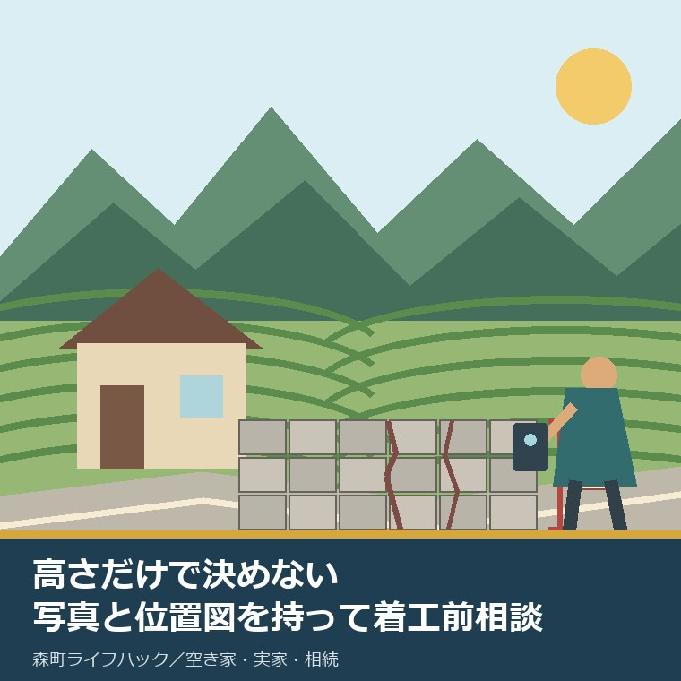
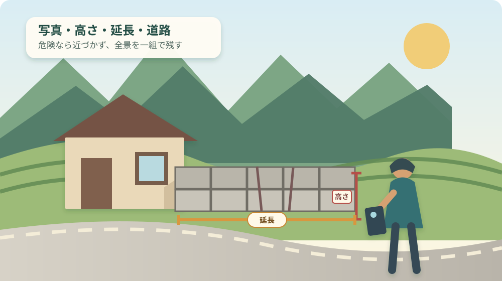
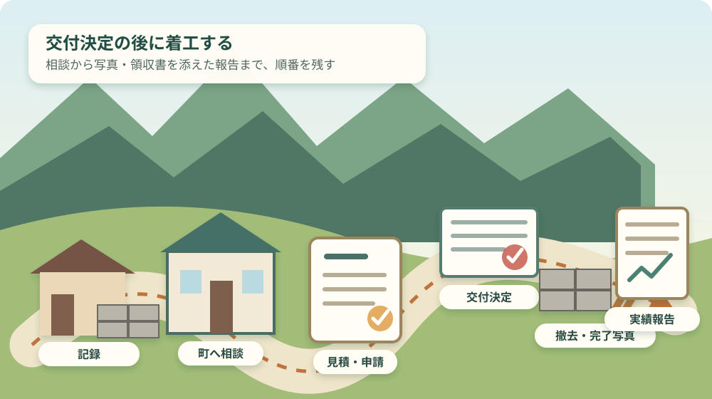

森町のブロック塀撤去補助｜上限26.6万円

この記事の要点
Q. 森町の空き家に高さ60cm以上の古いブロック塀があります。撤去前に何をしますか。
A. 現況写真、高さ・延長、道路の位置図をそろえ、見積もりの前後で定住推進課へ相談します。森町の補助は倒壊・転倒のおそれがある塀が対象です。避難路沿道は対象経費の3分の2で上限26万6,000円、その他は2分の1で上限20万円。交付決定前に工事を始めると対象外です。
森町の実家が空き家になり、道路沿いに古いブロック塀が残っている。ひびや傾きは気になるが、建物を売るか残すかは決めていない。そうした持ち主の方へ、塀だけを先に安全にする段取りを書きます。
町内の家を維持する家族は、固定資産税、火災保険、草刈り、雨漏り、台風後の見回りを既に引き受けています。遠方から森町へ往復する時間や交通費も、見えにくい維持費です。
古い塀への対応を後回しにしたくなる事情は分かります。それでも、道路側へ倒れるおそれがある塀は、家の売却時期とは切り離して考える必要があります。
この記事は森町公式ページと配布資料を2026年9月8日に確認し、撤去に絞って整理しました。公開資料で決め切れない道路区分や現地判定は、決め切れないまま町への確認事項として残します。
2026年4月更新、撤去補助で確定できる条件
森町公式「ブロック塀等の除却・建替え事業」は2026年4月1日更新で、地震時の道路通行と緊急車両等の通行機能を守るための補助を案内しています。
撤去の対象は、地震時に倒壊・転倒のおそれがあり、地上からの高さが60cm以上のブロック塀です。高さ60cm以上という一つの条件だけでは、対象とは確定しません。
「古い」「見た目が悪い」「空き家に付いている」だけでも決まりません。危険性と道路との関係を含め、町が申請内容を確認します。
制度ページは補助対象経費を、業者の見積額と町の基準額のうち少ない方としています。撤去の町基準額は、塀の延長1m当たり8,900円です。
避難路沿道の撤去は補助対象経費の3分の2で、上限は266,000円です。記事タイトルの26.6万円は、この区分の上限額を万円へ換算したものです。
その他の道路沿いの撤去は補助対象経費の2分の1で、上限は200,000円です。どちらも1,000円未満を切り捨てます。
建替えは別の条件と別の計算です。除却を行い、公衆用道路に面し、安全な構造とすることなどが条件で、町基準額は延長1m当たり38,400円、補助は3分の2、上限330,000円です。
この記事の読者像は撤去を考える空き家所有者ですが、森町公式ページに「空き家限定」とは書かれていません。空き家だから有利とも不利とも決めず、対象確認から始めます。
上限26.6万円は、高さ60cmだけでは届かない
森町の避難路沿道上限266,000円へ達するには、補助対象経費が少なくとも399,000円必要です。3分の2を掛ける前の金額から逆算できます。
町基準額だけで399,000円へ達する長さは約44.9mです。業者見積額も399,000円以上であることが前提になります。短い塀なら、上限より前に計算式で額が決まります。
ここは意外に見落とされます。上限26.6万円は、対象になった人が一律に受け取る定額ではありません。
| 撤去の区分 | 補助対象経費 | 補助率・上限 | 延長10mの試算 |
|---|---|---|---|
| 避難路沿道 | 見積額と延長×8,900円の少ない方 | 3分の2・266,000円 | 基準額89,000円なら59,000円 |
| その他 | 見積額と延長×8,900円の少ない方 | 2分の1・200,000円 | 基準額89,000円なら44,000円 |
延長10mの町基準額は89,000円です。見積額が89,000円以上なら、避難路沿道は59,000円、その他は44,000円が1,000円未満切り捨て後の試算になります。
見積額が70,000円なら、町基準額89,000円ではなく70,000円が計算の土台です。避難路沿道でも3分の2を掛け、端数を処理した46,000円が試算になります。
この計算は、補助対象と道路区分が認められた場合の見当です。実際の交付額を保証するものではありません。
塀の延長は、道路に沿った部分と門柱などの扱いで迷うことがあります。自分で測った数字は相談用の概算とし、見積書と町の確認で確定させます。
家屋の解体費と塀の撤去費を一つの総額で受け取る制度でもありません。建物まで壊す場合は、実家解体を1月1日から逆算した記事で、建物、塀、税、滅失登記を分けて確認できます。

着工前は、写真から交付決定まで順番を崩さない
森町のブロック塀撤去補助は、交付決定前に工事へ着手すると対象外です。補助を使う可能性が少しでもあるなら、工事日の確定より先に町へ相談します。
第一段階は、安全な位置からの現況記録です。塀全体、道路側、敷地側、ひび、傾き、基礎付近を撮り、撮影日を残します。
倒れかけた塀を押す、揺らす、すぐ横で測る必要はありません。通行者へ差し迫った危険がある場合は、補助の書類より人が近づかないための安全確保と町への連絡を先にします。
第二段階は、高さと延長の概算です。巻尺を当てられない状態なら、無理に測らず、写真と既知の寸法から概算であることを明記します。
第三段階は、位置図と配置図の下書きです。必要書類チェックリストは、位置図を原則縮尺2,500分の1以上とし、緊急輸送路、避難路、避難地、通学路等の記載を求めています。
地図へ印を付けるときは、住居表示だけでなく塀が面する道路を示します。道路の反対側から撮った全景写真があれば、担当者と位置関係を共有しやすくなります。
第四段階は、定住推進課住まい支援係への事前相談です。住所、写真、概算寸法、位置図を示し、危険性の確認方法と道路区分、今年度の受付状況を聞きます。
第五段階は、施工業者との打ち合わせと見積もりです。補助対象の範囲と、対象外の庭木、門扉、土留め、運搬費などが一式に混ざっていないかを確認します。
第六段階で、申請書、位置図、配置図、施工前写真、見積書をそろえ、窓口へ直接申し込みます。所有者以外が申請する場合は、所有者承諾書が必要です。
申請フローは、町の審査と交付決定通知の後に着工する順番です。施工内容や申請額を変更するときは、変更承認申請が必要になるため、現場判断だけで範囲を増やしません。
工事後は、全景と着手から完了までが分かる工程別写真、施工業者との契約書の写し、領収書の写しを添えて実績報告します。町の確認と交付確定を経て、請求書を出した後に補助金が支払われます。
補助金は工事代金の支払い前に振り込まれる仕組みではありません。森町公式の耐震補助制度ページは、申請者が費用を支払った後に補助金を支払うため、一時的に全額の立替が必要と説明しています。
森町の空き家所有者には、現地の担い手を決める負担がある
森町の空き家で塀を撤去する家族には、書類以外に現地立会いの担い手が要ります。業者の下見、工事日、完了確認を誰が受けるかで、進む速さが変わります。
町外に住む所有者が毎回動くと、平日の窓口、現地下見、工事立会いが別日になる場合があります。移動回数を減らすには、最初の電話で必要書類と来庁回数を聞き、下見候補日をまとめます。
共有名義や相続登記前の家では、誰が所有者として承諾するかを先に確かめます。家族で話が付いていることと、申請書類上の権限が確認できることは同じではありません。
塀が境界付近にある場合も、所有を見た目だけで決めません。森町で家を売る前に境界・接道・名義を確認する記事の順番が、撤去工事の前にも使えます。
台風後や地震後の外回り確認は、同じ写真を使い回すためではなく、変化を比べるために行います。森町の空き家台風対策では、屋根、排水、飛散物を含む外回り3点の残し方を整理しています。
良い点：計算式と申請資料が公開されている
森町の撤去補助の良い点は、上限だけでなく延長1m当たり8,900円という町基準額が公開されていることです。持ち主が相談前に概算できます。
避難路沿道だけでなく、その他の区分にも2分の1、上限200,000円の枠があります。道路区分が上限側に当たらなくても、確認する意味は残ります。
申請フローと必要書類チェックリストが別紙で用意され、申請時と完了時の書類が分かれています。写真をいつ撮るか、契約書と領収書をなぜ残すかが見えます。
住宅・建築物の耐震補助制度ページは、着工前申請、事後払い、予算がなくなり次第終了という失敗しやすい条件を先に示しています。上限額だけ読んで工事を始める事故を防ぐ情報です。
危険な塀の撤去は、所有者だけの利益ではありません。道路を歩く人、近隣の家、緊急車両が通る空間を守る面があり、公費を使う理由が暮らしの側から理解できます。
注文したい点：道路区分と判断時期は電話確認が残る
森町の公開資料だけでは、個別の塀が避難路沿道かその他かを住所だけで確定できません。位置図と現況を見せて、住まい支援係へ確認する工程が残ります。
制度ページは撤去条件を危険性と高さ60cm以上で示す一方、申請フローは公衆用道路との関係も掲げています。読者が一枚だけ見て自己判定しない案内が要ります。
チェックリストには「地上3段以上又は60cm以上」という表現があります。2026年4月1日更新の制度ページは60cm以上とするため、本記事も60cm以上を基準にしましたが、現地の対象判定は町へ確認します。
固定された申請期限や、2026年9月8日時点の予算残額、申請から交付決定までの日数は、公開ページでは確認できませんでした。工事希望日から逆算するには電話確認が欠かせません。
制度は、知っているだけでは使えません。誰が現地を測り、見積もりを取り、着工前に役場へ行き、工事代をいったん全額払うか。そこまで決めて、初めて空き家の安全を支える段取りになります。

対案・結論：今日は全景写真を1枚残す
森町の空き家所有者が2026年9月8日にできる小さな一歩は、安全な位置から塀の全景写真を1枚撮り、住所、撮影日、高さと延長の概算を同じ紙へ書くことです。
売る、残す、建替えるという結論は要りません。相談に使える現況が一組できれば、家族の判断材料は確実に増えます。
写真を撮れないほど危険なら、その事実が最優先の情報です。近づかず、道路利用者の安全を確保できる連絡先へ状況を伝えます。
写真を用意したら、定住推進課住まい支援係0538-85-6321へ電話します。「空き家の塀」「住所」「およその高さと延長」「面する道路」「撤去だけを検討中」と伝えると、問いが散らかりません。
電話では、対象確認に現地調査が要るか、道路区分は何か、現在も受付中か、交付決定までの目安、所有者以外が動く場合の承諾書を確認します。
業者への見積依頼は、補助対象になり得る部分と、それ以外を分けて記載できるか相談します。工事日は交付決定後に確定する前提を共有します。
家全体の危険度も見直すなら、第2期森町空家等対策計画から実家の位置を確かめる記事が、門・塀、擁壁、屋根、外壁を分けて記録する助けになります。
家族に残す記録：塀と道路を一枚で共有する
ブロック塀撤去の家族記録には、物件の住所、所有者名、連絡担当者、撮影日、塀のおよその高さと延長を書きます。
塀が面する道路、最寄りの交差点、通学路表示や避難地への経路が見える場合は、その位置も地図へ記します。道路区分の最終判断は町へ委ねます。
現況写真には撮影方向を添えます。「道路から敷地を見る」「敷地から道路を見る」「東端から西端を見る」と書けば、別の日に現地へ行く家族にも通じます。
見積書を受け取った日、町へ相談した日、申請した日、交付決定通知の日、着工日、完了日、支払日、実績報告日を一列にします。抜けている欄が次の行動です。
境界標、登記事項証明書、固定資産税の通知、業者と町の担当者名も同じフォルダーへまとめます。売却未定でも、実家カルテとして後の選択に使えます。
大石の視点
森町のブロック塀撤去補助を不動産実務から見ると、査定額より先に安全と道路を確認する制度です。家を売るかどうかと、道路側の危険を減らすかどうかは別に決められます。
私は大石浩之（磐田市／不動産業）です。体験ストックにこの制度を使った一人称の事例はないため、ここからは公表情報を踏まえた私の判断として書きます。
私は、上限額から業者探しを始めるより、全景写真と位置図を町へ見せる方が先だと考えます。道路区分と対象範囲が決まらないままでは、見積額を比べる土台が揃わないからです。
私にも迷いがあります。危険な塀は早く撤去したい一方、交付決定前に着工すれば補助対象外です。差し迫った危険なら安全確保を優先し、待てる状態なら申請順を守る。この分岐は現況を町と業者へ正確に伝えて決めます。
上限26.6万円は助けになります。ただ、現地の担い手、町外からの移動、全額の立替、完了写真と実績報告まで含めて使える制度かを見ます。制度の良さは金額だけでなく、家族が最後まで回せるかで決まります。
森町のブロック塀撤去は、工事日より相談日を先に置く
森町の撤去補助は、危険性と高さ60cm以上を確認し、見積額と延長1m当たり8,900円の基準額の少ない方から計算します。避難路沿道は3分の2で上限266,000円、その他は2分の1で上限200,000円です。
申請は工事前です。写真、高さ、延長、位置図をそろえ、道路区分と対象範囲を住まい支援係へ確認し、交付決定通知の後に着工します。
今日の結論は、撤去や売却を決めることではありません。安全な位置から全景写真を1枚残し、家族の誰が町へ電話するかを決めることです。
よくある質問
Q1. 高さ60cm以上なら、森町のブロック塀撤去補助を受けられますか。
A1. 高さだけでは決まりません。森町公式ページは、地震時に倒壊・転倒のおそれがあり、地上から60cm以上の塀を除却対象としています。道路区分を含む現地条件は、写真・高さ・延長・位置図を示して定住推進課住まい支援係へ着工前に確認してください。
Q2. 避難路沿道なら、必ず26万6,000円が交付されますか。
A2. 必ず上限額になるわけではありません。業者見積額と延長1m当たり8,900円の町基準額を比べ、少ない額が補助対象経費です。避難路沿道はその3分の2で上限26万6,000円、その他は2分の1で上限20万円、1,000円未満は切り捨てです。
Q3. 工事を先に予約してから補助申請をしてもよいですか。
A3. 交付決定前に工事へ着手すると補助対象外です。契約や予約の扱いを自己判断せず、工事日を確定する前に定住推進課へ相談してください。交付申請、町の審査、交付決定通知を経てから着工し、完了後は写真・契約書・領収書などで実績報告します。
制度の対象、道路区分、予算、様式、金額、窓口は変わる場合があります。危険な塀の安全確保は現況を町と施工業者へ伝え、境界・所有・相続・税の個別判断は土地家屋調査士、司法書士、税理士など該当する専門家へ確認してください。
参考にした公式情報
- ブロック塀等の除却・建替え事業／静岡県森町（撤去の対象、町基準額、避難路沿道とその他の補助率・上限、建替え条件、申込方法、担当窓口を2026年9月8日に確認。ページ更新日2026年4月1日）
- 住宅・建築物の耐震補助制度について／静岡県森町（着工前申請、交付決定前の着手は対象外、事後払いと全額立替、予算がなくなり次第受付終了であることを2026年9月8日に確認。ページ更新日2026年4月1日）
- ブロック塀等耐震改修促進事業の申請フロー／静岡県森町（事前相談、申請、審査、交付決定、着工、実績報告、交付確定、請求、補助金交付の順を2026年9月8日に確認）
- ブロック塀等耐震改修促進事業の必要書類チェックリスト／静岡県森町（申請時と完了時の提出書類、位置図の記載事項、所有者以外が申請する場合の承諾書を2026年9月8日に確認）

磐田市で小さな不動産業を営みながら、森町の空き家・農地・実家じまいのご相談を受けています。地域と不動産実務をつなぐ目線で、確認の順番まで具体的に書きます。
最終確認日：2026-09-08 ／ 道路区分、危険性、対象範囲、予算残額、申請から交付決定までの日数は個別確認が必要です。本記事は公表情報と執筆者の見解を分けて記載しています。